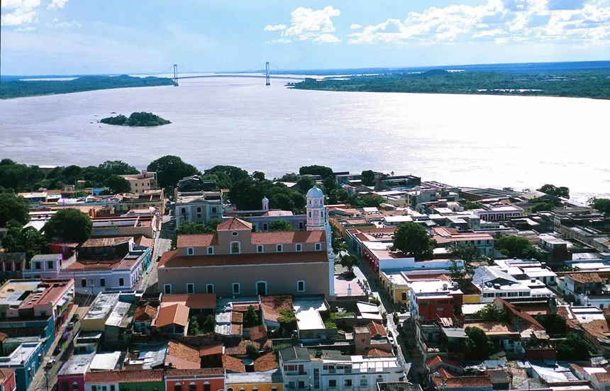
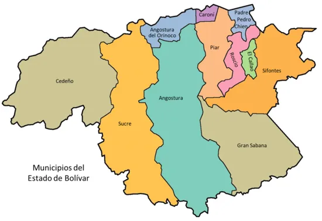
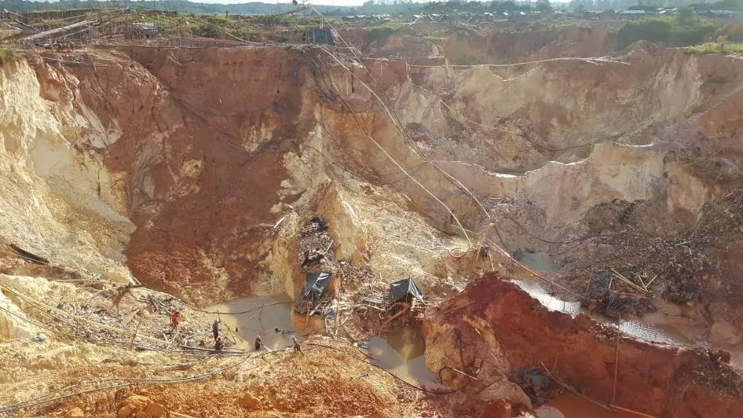
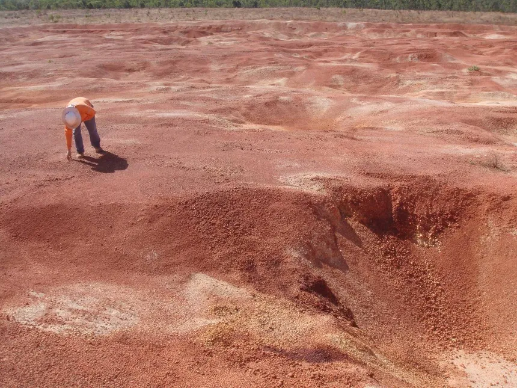
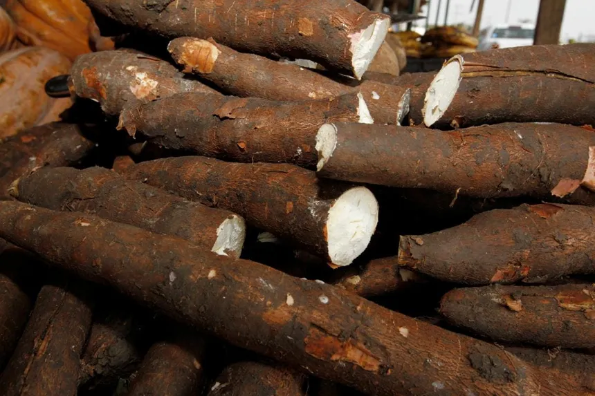
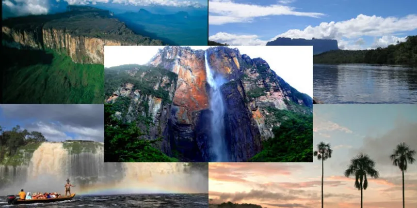

En esta sección se presentan algunos datos relevantes sobre el estado Bolívar, su ubicación, población, economía, y principales actividades productivas.
Ubicación
El estado Bolívar se encuentra en la región sureste de Venezuela. Limita al norte con los estados Anzoátegui, Guárico y Apure, al este con el estado Delta Amacuro y el río Orinoco, al sur con Brasil y al oeste con el estado Amazonas.

Población
La población del estado Bolívar es de aproximadamente 1.7 millones de habitantes. Las ciudades principales son Ciudad Bolívar (su capital) y Ciudad Guayana, que es el principal centro industrial de la región.
Superficie
Con una superficie de aproximadamente 238,000 km², Bolívar es el estado más extenso de Venezuela, cubriendo cerca del 26% del territorio nacional.
Economía y Comercio Principal
El estado Bolívar es rico en recursos naturales, especialmente en minerales como el hierro, oro, bauxita y diamantes. La actividad minera y la industria pesada son los principales motores de su economía. La Siderúrgica del Orinoco (SIDOR) y la empresa CVG Ferrominera del Orinoco son algunas de las industrias más importantes.
 Agricultura y Ganadería
Aunque en menor escala, el estado Bolívar también se dedica a la agricultura y ganadería, especialmente en la producción de yuca, maíz y otros cultivos tropicales.
Turismo
El turismo es una actividad económica en crecimiento en Bolívar, gracias a sus maravillas naturales como el Parque Nacional Canaima, el Salto Ángel (la cascada más alta del mundo), y la Gran Sabana. Estos sitios atraen a turistas nacionales e internacionales.
